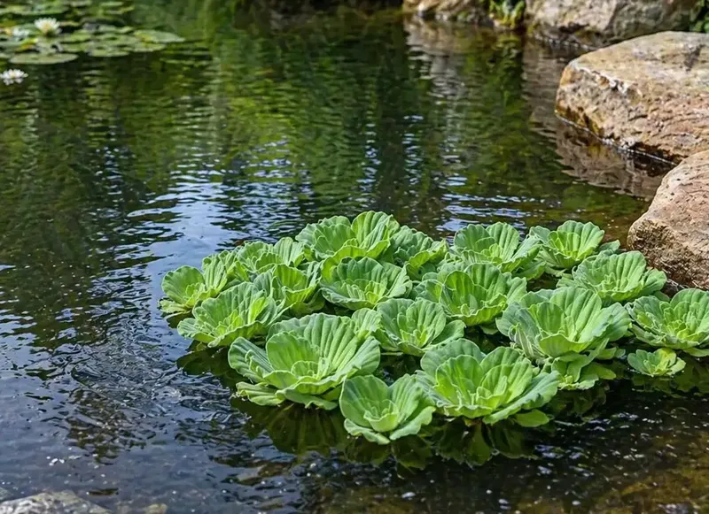

Растения для пруда
Пистия
Цена и наличие
- 3-6 см1,5 BYN / шт.В наличии
- 6-10 см5 BYN / шт.В наличии
- 10-15 см8 BYN / шт.В наличии
Данные на 23.11.2026.
Характеристики
- Диаметр розетки
- 25 см
- Высота растения
- 15 см
- Длина кроющего листа
- 10 мм
- Глубина корней
- 25-30 см
Описание
Пистия, также известная как водяная капуста, водяной латук или роза, является уникальным представителем семейства ароидных растений, обитающим исключительно на воде. Это растение широко известно среди людей, увлеченных аквариумами, и считается одним из самых привлекательных водных растений. Его популярность обусловлена выдающимися декоративными характеристиками, быстрым ростом и относительной неприхотливостью. Пистия прудовая адаптированная к солнечному свету, устойчива к ультрафиолету.
Пистия прудовая, также известная как водяная капуста, водяной латук или роза, представляет собой уникальное водное растение, принадлежащее семейству ароидных (Araceae). Это растение произрастает на поверхности стоячих водоемов, таких как озера, болота, пруды и медленно текущие реки. Пистия прудовая имеет довольно необычный и характерный внешний вид. Она состоит из небольших, круглых лишайникоподобных розеток. Каждая розетка состоит из нескольких листьев, плотно сложенных друг к другу в центре, что создает впечатление капусты. Листья пистии имеют мягкую текстуру и покрываются микроскопическими волосками, создающими влажное и блестящее покрытие. Они обычно окрашены в ярко-зеленый цвет, иногда с красноватыми оттенками. У пистии прудовой цветок довольно незаметный и скрытый внутри розетки листьев. Размножение пистии прудовой происходит как вегетативным путем, так и семенами. Вегетативное размножение осуществляется путем образования дочерних розеток, которые образуются на краях старых розеток и отделяются от них. Семена формируются в цветках, но процесс их опыления и распространения довольно сложен и редок. Пистия прудовая предпочитает теплый и влажный климат. Она обитает на поверхности стоячей воды, где создается устойчивый микроклимат вокруг розеток листьев. Это растение может расти как в слабокислых, так и в щелочных водах. Пистия прудовая играет важную роль в экосистеме водоемов, предоставляя укрытие и пищу. Ухаживать за пистией прудовой довольно просто. Она не требует особой подкормки и может расти в естественных условиях, если предоставить ей подходящие водные параметры и достаточно света. Золотая рыбка, карп кои и орфа прекрасно чувствуют себя с данным водным растением. Пистия прудовая – это интересное и красивое растение, которое может стать отличным украшением аквариумов, водных садов и других водных местностей.